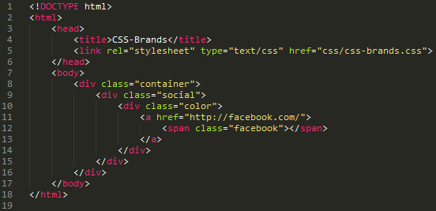

CSS-Brands contains a variaty of premade logos and brand names with the original colors. CSS-Brands uses font-awesome for the logos and is given the right colors by us.
CSS-brands is a easy way to make your website look awesome with just a few classes and spans.
We've made all the logos and brand names in both the original colors, black and white.
It's simple. You just import our css-file into your project by eighter linking to it in the markup or if you're using sass you just import it directly into your stylesheet with the @import function.
Now you just have to have a specific indent structure:
This structure will give you this result:
As long as you have the .social class and eighter the .color, .black or .white, you'll get the result you want.